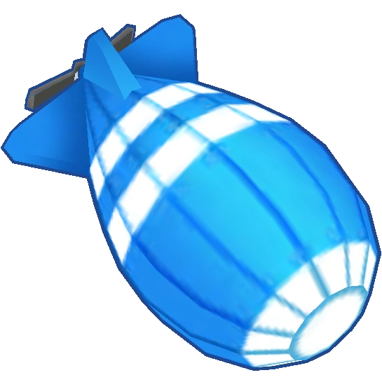
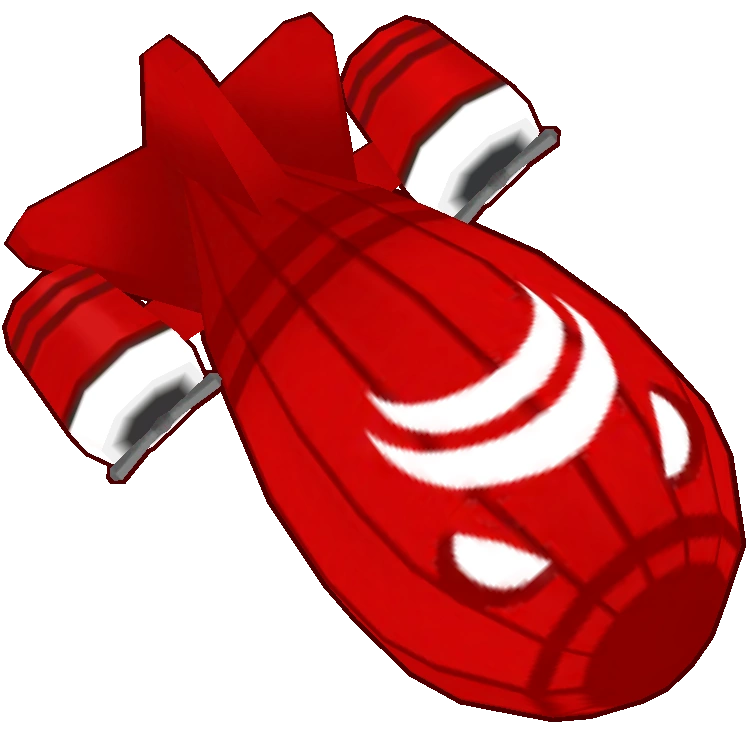

Here are a list of balloons that you pop over the course of the many different maps in the game. The balloons are mainly split into regular balloons and MOAB-class balloons which resemble blimps and take much longer to kill. Each balloon has varying health and speeds.


- Pink and Purples are two of the faster bloons in the game. Watch out for them!
- There are some bloons that are immune to specific attacks. Purples are immune to magic attacks, but act as a normal bloon. Lead Bloons are immune to sharp attacks, and are beaten normally using explosive / fire prjectiles. White Bloons are immune to ice, Black Bloons are immune to explosions, and Zebra Bloons are a mix of White and Black Bloons.
- MOAB-class bloons are tough. All of them have an “armor” that prevents them from being popped by one or two hits but rather need 30+ hits to break the outer shell. After beating the outer shell, they reveal more bloons underneath, some even revealing more MOAB-class bloons! Beware!
- Camo bloons cannot be seen by most monkeys. A good counter for these bloons is the Ninja Monkey, being able to see them even without upgrades!
- Regen bloons regenerate after not being attacked for a while. Be careful, as they can make a regen farm!
- Fortified bloons need a couple more hits as opposed to their normal counterpart.